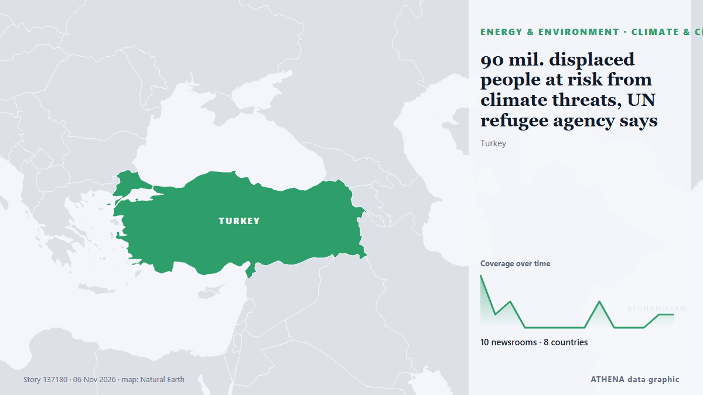

Κλίμα & κλιματική πολιτική
ΧορηγούμενοΠαρουσιάζεται από  Cybernetics and Artificial Intelligence Lab Welcome to the Cybernetics and Artificial Intelligence Laboratory, established at the Department of Business Administration of the National and Kapodistrian University of Athens. The lab is headed by Professor Dimitrios Thomakos. The lab aims to do research that can be published in top venues. Our research uses tools and methods of Artificial Intelligence, and lies in the following areas: - Forecasting - Decision making - Cyber security - Finance We are always looking forward to collaborating with exceptional students!
Cybernetics and Artificial Intelligence Lab Welcome to the Cybernetics and Artificial Intelligence Laboratory, established at the Department of Business Administration of the National and Kapodistrian University of Athens. The lab is headed by Professor Dimitrios Thomakos. The lab aims to do research that can be published in top venues. Our research uses tools and methods of Artificial Intelligence, and lies in the following areas: - Forecasting - Decision making - Cyber security - Finance We are always looking forward to collaborating with exceptional students!
| 25 Οκτ | 0 |
|---|---|
| 26 Οκτ | 0 |
| 27 Οκτ | 0 |
| 28 Οκτ | 0 |
| 29 Οκτ | 0 |
| 30 Οκτ | 0 |
| 31 Οκτ | 0 |
| 1 Νοε | 0 |
| 2 Νοε | 1 |
| 3 Νοε | 2 |
| 4 Νοε | 5 |
| 5 Νοε | 8 |
| 6 Νοε | 2 |
| 7 Νοε | 0 |
Οι τίτλοι των ειδήσεων παρουσιάζονται στα αγγλικά, όπως δημοσιεύτηκαν.

90 mil. displaced people at risk from climate threats, UN refugee agency says
Nearly 90 million forcibly displaced people are living in countries increasingly exposed to climate-related droughts, floods and extreme heat, the UN refugee agency said on Friday, warning ahead of… από The Korea Times
China sees fastest emissions drop since COVID-19 due to Mideast war: report
China’s carbon emissions fell by 3.1 percent in Q3, influenced by disruptions from the Middle East conflict, according to a report by the Center for Research on Energy and Clean Air. από Arab News
Turkey outlines 'paradigm shift' in energy use ahead of COP31
Such a shift, however, would require a huge level of investment—$500 billion in the next 13 years. από The New Arab
PACNEWS THREE, 05 NOVEMBER 2026
In this bulletin: 1. COMMONWEALTH — Commonwealth leaders commit finance, trade and Pacific resilience 2. από Islands Business (Fiji)
Meth trafficking stokes Pacific health crisis
Security policy in the Pacific must put people first as meth trafficking fuels a public health crisis, lawmakers have been warned. από Post-Courier (PNG)
The Tropical Forest Forever Facility turns one, and is billions short
Meant to pay countries for keeping forests standing, the fund has an interim charter, a board, a World Bank home… and insufficient funds. από Eco-Business
International News: UN report warns developing countries need $305 billion annually for Climate Adaptation
By Zoila Palma: Developing countries will need an estimated $305 billion annually by 2035 to adapt to the worsening impacts of climate change, nearly 10 times the amount they currently receive from… από Breaking Belize News
Democrats’ Big Statehouse Wins Could Transform Climate and Energy Policy
Before Tuesday’s election, Republicans held more governorships and state legislative seats than Democrats, along with an advantage in state trifectas—unified control of the governor’s office and both… από Inside Climate News
Pro-Israel Republican Rep. Mike Lawler concedes to Democratic challenger Cait Conley in NYC
Lawler, a former state assemblyman, has worked tirelessly during two terms on Capitol Hill to build his brand as the quintessential suburban moderate Republican. από The Jerusalem Post
StormGeo Partners with China Classification Society to Advance Digital Emissions Verification in China
StormGeo, a provider of weather intelligence and maritime technology and part of Alfa Laval’s Ocean Division, has joined forces with the China Classification Society (CCS) to help digitalize… από MarineLink
Antalya green zone to serve as COP31 climate action hub
Türkiye is creating a 582,000-square-meter Green Zone in the southern province of Antalya for the COP31 climate summit to connect everyday citizens, entrepreneurs, and businesses through actionable… από Hürriyet Daily News
Six measures could save 1.6m lives a year: WHO
The WHO report said implementing six measures could deliver a 'triple dividend' of healthier people, lower emissions and stronger economies. από Free Malaysia Today
Rich countries fall far short on climate adaptation funding, UN says
Countries are preparing to meet in Turkey from Nov 9 to 20 for the next round of climate talks. από The Straits Times